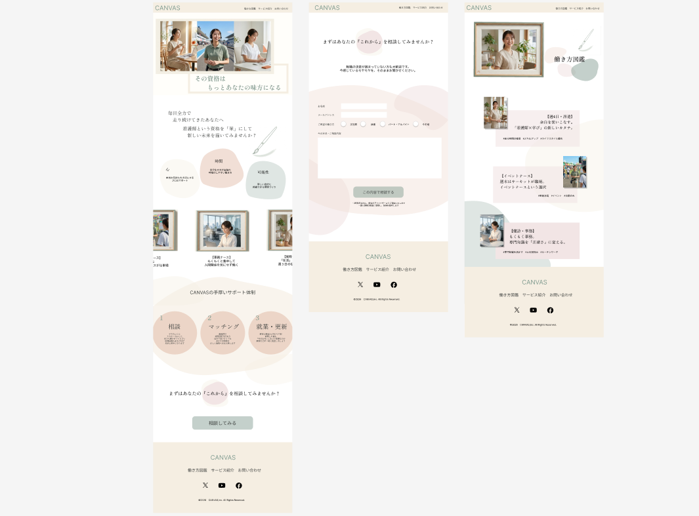

SKILL
Design / Figma(Prototyping)
Figmaを用い、ブランドの世界観を体現するUIデザインを行いました。
Management / GitHub
GitHubを用いたバージョン管理を行い、制作のプロセスを可視化しています。
コードの変更履歴を適切に残すことで、制作の確実性を高めるだけでなく、チーム開発や将来的なメンテナンスを見据えた、清潔で透明性の高い管理を習慣化しています。
Coding / VS Code
VS Codeを用い、HTML/CSSでのコーディングを行いました。
誰にとっても読みやすく、誠実なコードを書くことを意識しています。
PERSONA

来訪者：今の場所で精一杯走り続けている看護師様
「大学病院での激務。専門性を磨かなきゃ、もっと頑張らなきゃって、自分を追い込んできた気がします。 でも、ふと立ち止まった時に、今の自分のキャリアを否定せずに、別の道も探していいんだよって言ってくれる場所が欲しかったんです。」

依頼者：それぞれの歩みを肯定したいキャリア支援企業様
「転職を勧めるだけの場所にはしたくない。今の場所で培ってきた経験を尊重し、その人が無理なく『自分らしい働き方』に出会えるきっかけを作りたい。 一人ひとりのキャリアが、ひとつの絵として完成していく。訪れた人が、今の自分のままでいいと深く呼吸を整えられる、そんな安心感のある場所を形にしてほしいです」
POINT
情報の羅列ではないレイアウト
「キャリアを認められている」という気持ちで読み進められる言葉選び
具体的な写真を使用したイメージのしやすさ
相談ボタンへの誘導同線
CONCEPT
「キャリアの肯定、そして新しい彩りを。」
今までの歩みを抱きしめたまま、新しい扉を叩くこと。
来訪者が「今の自分」を肯定しながら、これからの未来に新しい彩りを添えていく
その挑戦を支えたいという依頼者の想いも大切に、
色彩豊かな明日への一歩を、静かに支える場所を構築しました。